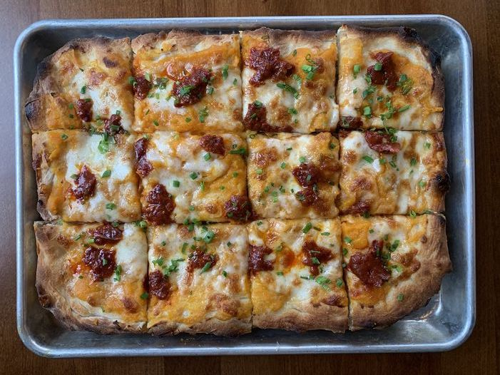

Square-Cut Pepperoni Pizza

Description
Pizza has always been a very comforting food for me,
however I can't always order in only to devour a full pie
on my own. After a full day of work, I don't have the energy,
or the ingredients, to make a pizza with 25 different ingredients.
That's why I've sought to make a simple recipe which requires less
than 5 ingredients and no more than 25 minutes of oven time before it's ready
to be eaten.
Ingredients
- 1/2 Ball of Pizza Dough
- 1-2 Tbs Marinara
- Pre-Shredded Mozzarella Cheese
- 12 Pieces Sliced Pepperoni
Steps
- Set oven heat to 450 degrees fahrenheit.
- Knead ball of dough into 12 inch by 8 inch rectangular shape and place on pan.
- Add 1-2 Tbs marinara sauce onto center of dough and spread evenly with underside of spoon
- Add shredded mozarella cheese before adding pepperoni slices spread out.
- Once oven pre-heated, set pan on oven rack and set timer for 20 minutes.
- Once timer ends, use oven mitts to ensure safe handling and set pan on stove to cool.
- Use pizza cutter, or spatula, to cut 3 lines long-ways, and 4 lines short-ways. Enjoy once allowed to cool.